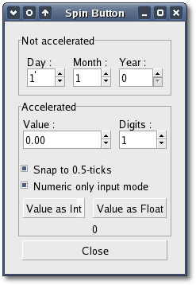

The attributes of an Adjustment are used by the Spin Button in the
following way:
The 'climb_rate' argument takes a value
between 0.0 and 1.0 and indicates the amount of acceleration that the
Spin Button has. The 'digits'
argument specifies the number
of
decimal places to which the value will be displayed. The last
constructor creates a Spin Button and an Adjustment with the
appropriate climb_rate and digit values based on the 'min', 'max' and
'step'
arguments specified.
A Spin Button can be reconfigured
after creation using the following
method:
void
configure(Gtk::Adjustment *adjustment, double
climb_rate, unsigned int digits);
The adjustment can be set and retrieved independently using the
following two methods respectively:
void
set_adjustment(Gtk::Adjustment *adjustment);
Gtk::Adjustment* get_adjustment() const;
The number of decimal places can also be altered using:
void
set_digits(unsigned int digits);
The value that a Spin Button is currently displaying can be changed
using the following method:
void
set_value(double value);
The current value of a Spin Button can be retrieved as either a
floating point or integer value with the following methods respectively:
double
get_value() const;
int get_value_as_int() const;
If you want to alter the value of a Spin Button relative to its current
value, then the following method can be used:
void
spin(Gtk::SpinType direction, double
increment);
The 'direction' argument can take one of the following values from the
Gtk::SpinType enum:
- SPIN_STEP_FORWARD
- SPIN_STEP_BACKWARD
- SPIN_PAGE_FORWARD
- SPIN_PAGE_BACKWARD
- SPIN_HOME
- SPIN_END
- SPIN_USER_DEFINED
This function packs in quite a bit of
functionality, which I will attempt to clearly explain. Many of these
settings use values from the Adjustment object that is associated with
a
Spin Button. SPIN_STEP_FORWARD and SPIN_STEP_BACKWARD change the value
of the Spin
Button by the amount specified by increment, unless increment is equal
to 0, in which case the value is changed by the value of step_increment
in the Adjustment. SPIN_PAGE_FORWARD and SPIN_PAGE_BACKWARD simply
alter the value of the
Spin Button by increment. SPIN_HOME sets the value of the Spin Button
to the bottom of the
Adjustments range. SPIN_END sets the value of the Spin Button to the
top of the
Adjustments range. SPIN_USER_DEFINED simply alters the value of the
Spin Button by the
specified amount.
We move away from methods for setting and retrieving the range
attributes of the Spin Button now, and move onto methods that effect
the
appearance and behaviour of the Spin Button widget itself. The first of
these methods is used to constrain the text box of the
Spin Button such that it may only contain a numeric value. This
prevents
a user from typing anything other than numeric values into the text box
of a Spin Button.
void
set_numeric(bool numeric);
You can set whether a Spin Button will wrap around between the upper
and lower range values with the following method:
void
set_wrap(bool wrap);
You can set a Spin Button to round the value
to
the nearest step_increment, which is set within the Adjustment object
used with the Spin Button. This is accomplished with the following
method:
void
set_snap_to_ticks(bool snap_to_ticks);
The update policy of a Spin Button can be changed with the following
method:
void
set_update_policy(Gtk::SpinButtonUpdatePolicy policy);
The 'policy' argument can be one of the
values from the Gtk::SpinButtonUpdatePolicy enum:
- UPDATE_ALWAYS
- UPDATE_IF_VALID
These policies affect the behavior of a Spin Button when parsing
inserted text and syncing its value with the values of the Adjustment.
In the case of UPDATE_IF_VALID the Spin Button only value gets
changed if the text input is a numeric value that is within the range
specified by the Adjustment. Otherwise the text is reset to the current
value. In the case of UPDATE_ALWAYS we ignore errors while converting
text
into a numeric value.
Finally, you can explicitly request that a Spin Button update itself:
void
update();
Spin
Button Example
Here is an example that uses several spin buttons, some accelerated and
some not. You can set the number of digits displayed by the spin
buttons and you can display their current values as either a double or
an integer.
Checking and unchecking the 'Numeric only input mode' checkbutton
toggles the spin button numeric mode on and off.
The header file for the SpinButton example is <spinbutton.hh>:
#include <xfc/main.hh>
#include <xfc/gtk/checkbutton.hh>
#include <xfc/gtk/label.hh>
#include <xfc/gtk/spinbutton.hh>
#include <xfc/gtk/window.hh>
using namespace Xfc;
class SpinButtonWindow : public Gtk::Window
{
Gtk::SpinButton *spinner1;
Gtk::Label *val_label;
protected:
void
on_change_digits(Gtk::SpinButton *spin);
void
on_toggle_snap(Gtk::CheckButton *button);
void
on_toggle_numeric(Gtk::CheckButton *button);
void on_get_value(bool value_as_int);
public:
SpinButtonWindow();
virtual
~SpinButtonWindow();
};
and the source file is <spinbutton.cc>:
#include "spinbutton.hh"
#include <xfc/gtk/adjustment.h>
#include <xfc/gtk/box.hh>
#include <xfc/gtk/frame.h>
SpinButtonWindow::SpinButtonWindow()
{
set_title("Spin Button");
Gtk::VBox *main_vbox = new
Gtk::VBox(false, 5);
main_vbox->set_border_width(10);
add(*main_vbox);
Gtk::Frame *frame = new
Gtk::Frame("Not accelerated");
main_vbox->pack_start(*frame);
Gtk::VBox *vbox = new
Gtk::VBox;
vbox->set_border_width(5);
frame->add(*vbox);
// Day, month, year spinners
Gtk::HBox *hbox = new
Gtk::HBox;
vbox->pack_start(*hbox, true, true, 5);
Gtk::VBox *vbox2 = new
Gtk::VBox;
hbox->pack_start(*vbox2, true, true, 5);
Gtk::Label *label = new
Gtk::Label("Day :");
label->set_alignment(0, 0.5);
vbox2->pack_start(*label, false);
Gtk::Adjustment *adj = new
Gtk::Adjustment(1.0, 1.0, 31.0, 1.0, 5.0, 0.0);
Gtk::SpinButton *spinner = new
Gtk::SpinButton(adj, 0, 0);
spinner->set_wrap(true);
vbox2->pack_start(*spinner, false);
vbox2 = new Gtk::VBox;
hbox->pack_start(*vbox2, true, true, 5);
label = new
Gtk::Label("Month :");
label->set_alignment(0, 0.5);
vbox2->pack_start(*label, false);
adj = new
Gtk::Adjustment(1.0, 1.0, 12.0, 1.0, 5.0, 0.0);
spinner = new
Gtk::SpinButton(adj, 0, 0);
spinner->set_wrap(true);
vbox2->pack_start(*spinner, false);
vbox2 = new Gtk::VBox;
hbox->pack_start(*vbox2, true, true, 5);
label = new
Gtk::Label("Year :");
label->set_alignment(0, 0.5);
vbox2->pack_start(*label, false);
adj = new
Gtk::Adjustment(1998.0, 0.0, 2100.0, 1.0, 100.0, 0.0);
spinner = new
Gtk::SpinButton(adj, 0, 0);
spinner->set_wrap(false);
spinner->set_size_request(55, -1);
vbox2->pack_start(*spinner, false);
frame = new
Gtk::Frame("Accelerated");
main_vbox->pack_start(*frame);
vbox = new Gtk::VBox;
set_border_width(5);
frame->add(*vbox);
hbox = new Gtk::HBox;
vbox->pack_start(*hbox, false, true, 5);
vbox2 = new Gtk::VBox;
hbox->pack_start(*vbox2, true, true, 5);
label = new
Gtk::Label("Value :");
label->set_alignment(0, 0.5);
vbox2->pack_start(*label, false);
adj = new
Gtk::Adjustment(0.0, -10000.0, 10000.0, 0.5, 100.0, 0.0);
spinner1 = new
Gtk::SpinButton(adj, 1.0, 2);
spinner1->set_wrap(true);
spinner1->set_size_request(100, -1);
vbox2->pack_start(*spinner1, false);
vbox2 = new Gtk::VBox;
hbox->pack_start(*vbox2, true, true, 5);
label = new
Gtk::Label("Digits :");
label->set_alignment(0, 0.5);
vbox2->pack_start(*label, false);
adj = new
Gtk::Adjustment(2, 1, 5, 1, 1, 0);
Gtk::SpinButton *spinner2 = new
Gtk::SpinButton(adj, 0.0, 0);
spinner2->set_wrap(true);
spinner2->signal_value_changed().connect(sigc::bind(sigc::mem_fun(this,
&SpinButtonWindow::on_change_digits),
spinner2));
vbox2->pack_start(*spinner2, false);
hbox = new Gtk::HBox;
vbox->pack_start(*hbox, false, true, 5);
Gtk::CheckButton *check_button = new
Gtk::CheckButton("Snap to 0.5-ticks");
check_button->signal_clicked().connect(sigc::bind(sigc::mem_fun(this,
&SpinButtonWindow::on_toggle_snap),
check_button));
vbox->pack_start(*check_button);
check_button->set_active(true);
check_button = new
Gtk::CheckButton("Numeric only input mode");
check_button->signal_clicked().connect(sigc::bind(sigc::mem_fun(this,
&SpinButtonWindow::on_toggle_numeric), check_button));
vbox->pack_start(*check_button);
check_button->set_active(true);
hbox = new Gtk::HBox;
vbox->pack_start(*hbox, false, true, 5);
Gtk::Button *button = new
Gtk::Button("Value as Int");
button->signal_clicked().connect(sigc::bind(sigc::mem_fun(this,
&SpinButtonWindow::on_get_value), true));
hbox->pack_start(*button, true,true, 5);
button = new
Gtk::Button("Value as Float");
button->signal_clicked().connect(sigc::bind(sigc::mem_fun(this,
&SpinButtonWindow::on_get_value), false));
hbox->pack_start(*button, true, true, 5);
val_label = new
Gtk::Label("0");
vbox->pack_start(*val_label);
hbox = new Gtk::HBox;
main_vbox->pack_start(*hbox, false);
button = new
Gtk::Button("Close");
button->signal_clicked().connect(sigc::mem_fun(this,
&SpinButtonWindow::dispose));
hbox->pack_start(*button, true, true, 5);
show_all();
}
SpinButtonWindow::~SpinButtonWindow()
{
}
void
SpinButtonWindow::on_change_digits(Gtk::SpinButton *spin)
{
spinner1->set_digits(spin->get_value_as_int());
}
void
SpinButtonWindow::on_toggle_snap(Gtk::CheckButton *button)
{
spinner1->set_snap_to_ticks(button->get_active());
}
void
SpinButtonWindow::on_toggle_numeric(Gtk::CheckButton *button)
{
spinner1->set_numeric(button->get_active());
}
void
SpinButtonWindow::on_get_value(bool
value_as_int)
{
String text;
if (value_as_int)
text = String::format("%d",
spinner1->get_value_as_int());
else
text = String::format("%0.*f",
spinner1->get_digits(), spinner1->get_value());
val_label->set_text(text);
}
int main (int
argc, char *argv[])
{
using namespace Main;
init(&argc, &argv);
SpinButtonWindow window;
window.signal_destroy().connect(sigc::ptr_fun(&Xfc::Main::quit));
run();
return 0;
}
Compiling Spin Button
If you compiled and installed XFC yourself, you will find the source
code for Spin Button in the
<examples/howto/spinbutton> source directory along with a Makefile. If
XFC came pre-installed, or you installed it from an RPM package, you
will
find the source code in the
</usr/share/doc/xfcui-X.X/examples/howto/spinbutton> subdirectory. In
this case you will have to create the Makefile yourself (replace X.X
with the
version number of the libXFCui library you have installed).
To create a Makefile for Spin Button, add the following lines to a new
text
file
and save it using the name "Makefile":
CC = g++
CFLAGS = -Wall -O2
spinbutton: spinbutton.cc spinbutton.hh
$(CC) spinbutton.cc -o spinbutton $(CFLAGS)
`pkg-config xfcui-X.X --cflags --libs`
clean:
rm -f *.o spinbutton
If you cut and paste these lines make sure the whitespace before $(CC)
and rm is a tab character. When
you
compile and run this program you will see the following window appear:
